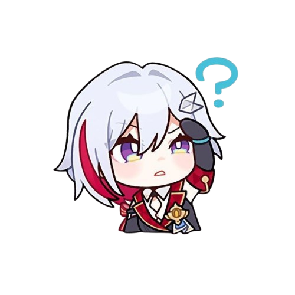
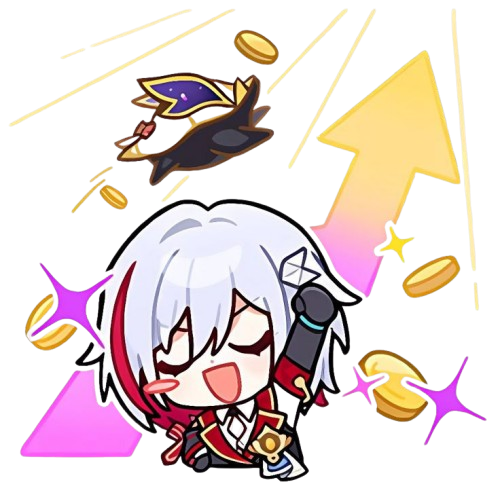

"Destor, kamu sudah pernah lihat CV ini?" "Yang mana yang Anda ... oh, dia ya — Dia baru saja menyelesaikan magangnya di tim penelitian pemasaran, dan membuat sedikit kekacauan di sana ... eh, dalam arti yang bagus." "Dia sudah selesaikan magangnya? Ah ...." "Ada yang salah, Tuan Dvorski?" "Tidak ada. Hanya penasaran saja. Karena usia saat dia memulai kariernya adalah usia termuda yang tercatat di departemen. Selain itu, CV dia juga sangat mengagumkan. Coba kulihat ... Oh! Dia bahkan menandatangani "kontrak seumur hidup"?! Tak kusangka kita bisa menemukan seorang yang berbakat seperti ini dari planet yang penuh keputusasaan ...." "Aku sudah mengeceknya dengan rekan-rekan kita. Segala yang tertera di CV dia itu benar. Dia bahkan tidak menulis hasil tes perekrutannya di sana. Ternyata dia mendapat nilai tinggi dalam ilmu akturia, mikro dan makroekonomi, keuangan antargalaksi, dan ilmu manajemen. Bahkan tes fisiknya juga hampir sempurna. Satu-satunya topik yang gagal adalah ...." "Hmm? Apa itu?" "Etika bisnis. Dia bahkan tidak muncul di tes itu. 'Aku benar-benar benci formalitas.' — itulah yang dikatakan gadis itu."
"Katakanlah ... kamu —" "Hmm? Apa, Paman Dvorski?" "Kamu tahu kalau hewan peliharaan dilarang di kantor, kan?" "Tentu saja! Baris 144 dari paragraf 86 dalam pamflet karyawan: Melarang ketat membawa apa pun bentuk hewan peliharaan organik ke area kantor Interastral Peace Corporation." "Jadi kamu ingat dengan sangat baik. Lalu, bisakah kamu jelaskan dirimu ..." "Tapi menurutku aturan ini tidak berguna dan tidak perlu dipatuhi sama sekali. Terus terang saja Pak, dengan adanya hewan lucu ini di sekitar, efisiensi kerjaku meningkat dua puluh tujuh persen!" "Aku tidak akan mempertanyakan angka yang keluar dari mulutmu, tapi ..." "Lihat? Si kecil ini ... bangun kamu — namanya Numby! Jangan perlakukan dia seperti Warp Trotter biasa. Dia sangat peka terhadap aroma uang! Sekarang aku selalu membawanya ke mana pun aku pergi, bahkan saat keluar negeri untuk urusan bisnis. Singkatnya, dia sudah jadi bintang keberuntunganku~" "Aku tidak pernah berpikir kalau aku akan melihat makhluk seperti ini di kantor. Sungguh ... ehem aku akan pura-pura tidak melihatnya. Tapi ingatlah, waktu direktur datang berkunjung — AHH! AADUHH! Ada apa ini?! Ja-jangan gigit aku! CEPATTT! Jauhkan diaaa—"
Pelapor: Fransisco Dvorski Tujuan Laporan: "Jade" Isi Laporan: Laporan Kerja Pemimpin Tim Nyonya "Jade": Ini seharusnya menjadi kali terakhir saya mengirimkan laporan kerja melalui sistem ini. Waktu berlalu begitu cepat. Dalam sekejap mata, saya sudah bekerja selama setengah Era Amber di Departemen Investasi Strategis, dan hanya berhasil naik ke posisi saat ini melalui banyak cobaan dan kesulitan. Saya mungkin tidak bisa menyebut diri saya istimewa, tapi setidaknya saya telah mengumpulkan kekayaan yang cukup untuk beberapa generasi keluarga. Saa tidak menginginkan hal lain lagi. Di sini, saya ingin secara khusus mengucapkan terima kasih atas dukungan luar biasa yang terus Nyonya Jade berikan kepada Tim Pemasaran 166. Saya tidak akan menghabiskan waktu untuk menyajikan prestasi dan hasil terbaru yang telah diselesaikan Tim Pemasaran 166 dalam laporan kerja ini. Hasil tersebut dapat dilihat dari laporan pekerjaan bulanan yang telah diajukan oleh tim. Satu-satunya tujuan dari laporan ini adalah untuk merekomendasikan seorang anggota khusus dari tim kepada Anda, yaitu: ███•████.
Saya yakin Anda pasti telah mendengar tentang pengalaman dan prestasi ███•████ dalam berbagai cara. Saya telah melampirkan dokumen laporan kerja dan berkas umpan balik 360 derajat yang dilakukan oleh beberapa personel dalam tim di sistem, untuk Anda tinjau. Meskipun masih muda, ███ telah menunjukkan kapasitas kerja yang luar biasa, pemikiran manajemen, dan kemampuan untuk tampil di bawah tekanan. Saya tidak ragu bahwa, jika dia mengambil tanggung jawab kepemimpinan Tim Pemasaran 166, laba tim ini dan tingkat keberhasilan proyek akan meningkat secara signifikan. Saya juga yakin bahwa karier ███ pasti tidak akan berhenti di sini, terutama dengan potensi yang telah dia tunjukkan. Dia akan naik ke tingkat yang lebih besar dan lebih baik di masa depan. Oleh karena itu, setelah saya pensiun, saya harap Anda akan dapat memberikan perhatian kepada ███•████. Kami di Departemen Investasi Strategis selalu percaya bahwa bakat adalah investasi terbaik, dan saya yakin Anda sudah memperhatikannya. Tim Pemasaran 166, Departemen Investasi Strategis Fransisco Dvorski.
"Destor ..." "Ada apa, Tuan Dvorski?" "Mungkin ... kamu bisa mulai makan dulu? Kurasa tidak ada yang datang." "Tidak apa-apa. Saya belum lapar. Ini adalah pesta perpisahan Anda. Mari kita tunggu lagi." "Haha ... aku tahu seperti apa orang-orang itu. Yang mereka pikirkan cuma bekerja dan menghasilkan uang .... Mereka mungkin sudah melupakan pemimpin tua mereka sepenuhnya." "Maaf sekali, Tuan Dvorski. Awalnya Anda berpikir setidaknya Yelena akan ...." "Eh, jangan gunakan nama itu. Sekarang kamu harus memanggilnya 'Topaz'. Sejujurnya, aku tidak pernah membayangkan bahwa dia akan menjadi salah satu dari mereka ...." "Kamu harus mengakui pencapaiannya, Destor. Tua bangka sepertiku tidak akan pernah mendekati posisi itu meskipun sudah bekerja di sini selama beberapa kali lipat masa hidup. Dia sudah menjadi bagian dari dunia yang berbeda. Bagaimana mungkin dia memiliki waktu untuk datang ke pesta kecil ini?" "Anda terlalu merendah. Saya rasa ... ah, ada yang mengetuk pintu! Tetaplah di sini. Saya akan membukanya." "Siapa itu, Destor? Penglihatanku sudah sangat buruk. Aku tidak bisa mengenali orang, bahkan kalau mereka berdiri di hadapanku ...." "Maaf, Tuan. Tidak ada yang datang. Hanya ada sebuah surat yang dikirim." "Oh, begitu. Surat dari siapa? Kenapa begitu formal? Mereka kan bisa mengirim pesan elektronik ...." "Tidak ada nama yang tertera di amplopnya. Tunggu, saya akan membaca suratnya untuk Anda—" "Kepada Tuan Dvorski yang Terhormat: Terima kasih atas dukungan dan bantuan Anda selama bertahun-tahun! Saya pasti tidak akan berada di tempat seperti sekarang ini tanpa perhatian dan bimbingan Anda. Saya menyampaikan permohonan maaf yang paling tulus karena tidak bisa menghadiri pesta perpisahan pensiun Anda. Saat ini saya sedang bekerja di luar negeri di Taikiyan. Setelah proyek ini selesai, saya pasti akan mengambil satu hari libur dan datang menjenguk Anda. Selain itu, saya ingat Anda suka Roboball — Jadi saya akan membawa beberapa oleh-oleh dari Taikiyan untuk Anda. Setia Selamanya, Yelena." "..." "Tuan ... Dvorski? Anda ... menangis?"
